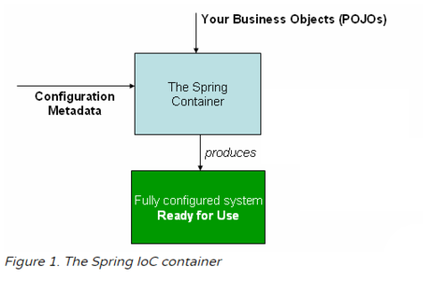
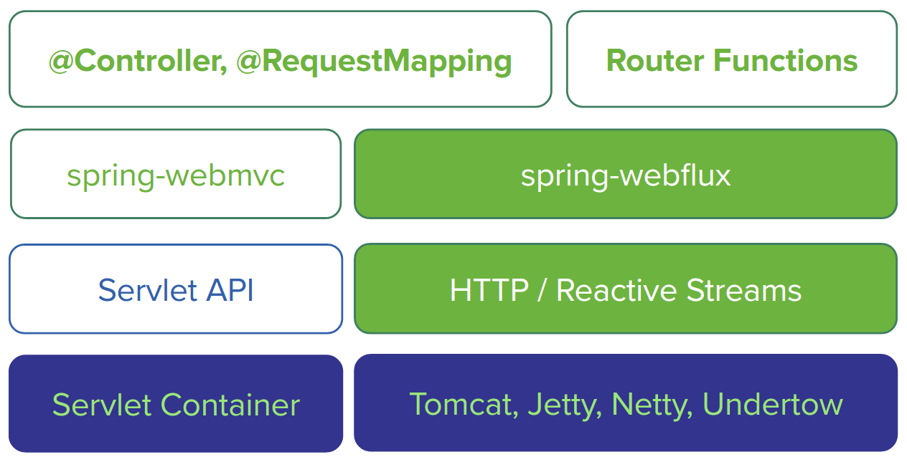

Programación de Aplicaciones Telemáticas
Tema 7: Spring Boot
Agenda
Sessión 1
- Spring Framework
- Spring Boot
- Mi primera aplicación Spring
- Scaffolding de un proyecto
- References
Agenda
Sessión 2
- Especificaciones Jakarta EE
- Spring Core
- Spring Web
- Modelos de Concurrencia
Agenda
Sessión 3
- Error Handling
- Consumiendo HTTP Endpoints
- Validacion de Bean
- Configuracion
Agenda
Sessión 4
- Logging
- Scheduling
- Actuator
- Spring Security
Agenda
Sessión 5
- Arquitectura Neflix
- Arquitectura K8S
- Servicios auxiliares
Sessión 1
Spring Framework
The Spring Framework provides a comprehensive programming and configuration model for modern Java-based enterprise applications on any kind of deployment platform.
Spring Framework
Why Spring?
Spring came into being in 2003 as a response to the complexity of the early J2EE specifications.
Spring Framework
The Spring programming model does not embrace the Java EE platform specification; rather, it integrates with carefully selected individual specifications from the EE umbrella
Spring Framework
- Servlet API (JSR 340)
- Concurrency Utilities (JSR 236)
- JSON Binding API (JSR 367)
- Bean Validation (JSR 303)
- JPA (JSR 338)
- JMS (JSR 914)
- Dependency Injection (JSR 330)
- Common Annotations (JSR 250)
Spring Framework

Spring Framework
¿Cual es el patrón de diseño detras de Spring Framework?

Spring Boot
Spring Boot helps you to create stand-alone, production-grade Spring-based Applications that you can run. We take an opinionated view of the Spring platform and third-party libraries, so that you can get started with minimum fuss.
Spring Boot
Ecosistema Spring
https://spring.io/projects
Spring Boot
Spring Initializr
https://start.spring.io/
Spring Boot
Spring Boot Starters
Starters are a set of convenient dependency descriptors that you can include in your application. You get a one-stop shop for all the Spring and related technologies that you need without having to hunt through sample code and copy-paste loads of dependency descriptors.
https://docs.spring.io/spring-boot/docs/2.3.3.RELEASE/reference/htmlsingle/#using-boot-starter
Spring Boot
Mi primera aplicación Spring
curl https://start.spring.io/starter.zip \
-d dependencies=web,actuator,devtools \
-d bootVersion=2.4.1 \
-o my-project.zip
- https://start.spring.io/
- https://docs.spring.io/initializr/docs/current/reference/html/#command-line
Spring Boot
Mi primera aplicacion Spring
@SpringBootApplication
public class DemoApplication {
private static ConfigurableApplicationContext applicationContext;
public static void main(String[] args) {
applicationContext = SpringApplication.run(DemoApplication.class, args);
displayAllBeans();
}
public static void displayAllBeans() {
String[] allBeanNames = applicationContext.getBeanDefinitionNames();
AtomicInteger counter = new AtomicInteger();
Arrays.asList(allBeanNames).stream()
.map(bean -> counter.incrementAndGet() + " " + bean)
.forEach(System.out::println);
}
}
Spring Boot
Scaffolding de un proyecto

Spring Boot
Scaffolding de un proyecto
onionArchitecture()
.domainModels("com.myapp.domain.model..")
.domainServices("com.myapp.domain.service..")
.applicationServices("com.myapp.application..")
.adapter("cli", "com.myapp.adapter.cli..")
.adapter("persistence", "com.myapp.adapter.persistence..")
.adapter("rest", "com.myapp.adapter.rest..");
Spring Boot
Scaffolding de un proyecto
- The domainModels packages contain the domain entities.
- The packages in domainServices contains services that use the entities in the domainModel packages.
- The applicationServices packages contain services and configuration to run the application and use cases.
- The adapter package contains logic to connect to external systems and/or infrastructure.
Referencies
- https://docs.spring.io/spring-framework/docs/current/reference/html/
- https://docs.spring.io/spring-framework/docs/current/reference/html/core.html#spring-core
- https://docs.spring.io/spring-boot/docs/current/reference/htmlsingle/
- https://docs.spring.io/spring-framework/docs/current/reference/html/web.html
- https://docs.spring.io/spring-boot/docs/2.3.3.RELEASE/reference/htmlsingle/#using-boot-starter
- https://docs.spring.io/initializr/docs/current/reference/html/#command-line
- https://blog.cleancoder.com/uncle-bob/2012/08/13/the-clean-architecture.html
- https://jeffreypalermo.com/2008/07/the-onion-architecture-part-1/
Sessión 2
Especificaciones Jakarta EE
- Dependency Injection (JSR 330)
- Common Annotations (JSR 250)
- Servlet API (JSR 340)
- Concurrency Utilities (JSR 236)
- JSON Binding API (JSR 367)
- Bean Validation (JSR 303)
Especificaciones Jakarta EE
Especificaciones Jakarta EE
Core:
- Dependency Injection (JSR 330)
- Common Annotations (JSR 250)
Especificaciones Jakarta EE
Web:
- Servlet API (JSR 340)
- Concurrency Utilities (JSR 236)
- JSON Binding API (JSR 367)
- Bean Validation (JSR 303)
Spring Core
Spring Core
Especificaciones Jakarta EE
- Dependency Injection (JSR 330)
- Common Annotations (JSR 250)
Spring Core
Spring Container
Spring Core
Spring Container
Spring Core
Spring Container
In Spring, the objects that form the backbone of your application and that are managed by the Spring IoC container are called beans. A bean is an object that is instantiated, assembled, and otherwise managed by a Spring IoC container.
Spring Core
Spring Container

Spring Web
Especificaciones Jakarta EE
- Servlet API (JSR 340)
- Concurrency Utilities (JSR 236)
- JSON Binding API (JSR 367)
- Bean Validation (JSR 303)
Spring Web
Servlet API (JSR 340)
A Jakarta Servlet (formerly Java Servlet) is a Java software component that extends the capabilities of a server. Although servlets can respond to many types of requests, they most commonly implement web containers for hosting web applications on web servers and thus qualify as a server-side servlet web API.
Spring Web
Servlet API (JSR 340)

Spring Web
https://docs.spring.io/spring-framework/docs/current/reference/html/web.html#spring-web
Spring Web
Package org.springframework.web.servlet
https://docs.spring.io/spring-framework/docs/current/javadoc-api/org/springframework/web/servlet/package-summary.html
Spring Web
DispatcherServlet
Spring MVC, as many other web frameworks, is designed around the front controller pattern where a central Servlet, the DispatcherServlet, provides a shared algorithm for request processing, while actual work is performed by configurable delegate components.
Spring Web
DispatcherServlet

Spring Web
Servlet API (JSR 340)
Front Controller is defined as “a controller that handles all requests for a Web site”.

Spring Web
JAX-RS Example
@GET
@Path("/{id}")
@Produces("application/json")
public Response getUserById(@PathParam("id") int id) throws URISyntaxException
{
User user = DB.get(id);
if(user == null) {
return Response.status(404).build();
}
return Response
.status(200)
.entity(user)
.contentLocation(new URI("/user-management/"+id)).build();
}
Spring Web
Spring Web Example
@GetMapping("/{id}")
public Stormtrooper getTrooper(@PathVariable("id") String id) throws NotFoundException {
Stormtrooper stormtrooper = trooperDao.getStormtrooper(id);
if (stormtrooper == null) {
throw new NotFoundException();
}
return stormtrooper;
}
Spring Web
Spring Web Example
https://github.com/spring-guides/gs-rest-service
Modelos de Concurrencia
Modelos de Concurrencia
Thread-per-request model

Modelos de Concurrencia
Event model

Referencies
- https://spring.io/blog/2018/12/12/how-fast-is-spring
- http://tomcat.apache.org/tomcat-10.0-doc/architecture/requestProcess.html
- https://medium.com/javarevisited/spring-beans-in-depth-a6d8b31db8a1
- https://medium.com/javarevisited/top-spring-annotations-4f691babe458
- https://martinfowler.com/eaaCatalog/frontController.html
Sessión 3
Spring Web
Error Handling
- ExceptionHandler
- HandlerExceptionResolver
- ControllerAdvice
- ResponseStatusException
Spring Web
Error Handling
Define a method to handle exceptions and annotate that with @ExceptionHandler at @Controller level
@ResponseStatus(value=HttpStatus.CONFLICT,
reason="Data integrity violation") // 409
@ExceptionHandler(DataIntegrityViolationException.class)
public void conflict() {
// Nothing to do
}
Spring Web
Error Handling
Spring brings support for a global @ExceptionHandler with the @ControllerAdvice annotation
@ControllerAdvice
public class RestResponseEntityExceptionHandler
extends ResponseEntityExceptionHandler {
@ExceptionHandler(value= { IllegalArgumentException.class})
protected ResponseEntity< Object > handleConflict(
RuntimeException ex, WebRequest request) {
String bodyOfResponse = "This should be application specific";
return handleExceptionInternal(ex, bodyOfResponse,
new HttpHeaders(), HttpStatus.CONFLICT, request);
}
}
Spring Web
Consumiendo HTTP Endpoints
RestTemplate restTemplate = new RestTemplate();
String fooResourceUrl = "http://localhost:8080/api/foos";
ResponseEntity< String > response = restTemplate
.getForEntity(fooResourceUrl + "/1", String.class);
https://docs.spring.io/spring-boot/docs/current/reference/htmlsingle/#boot-features-resttemplate
https://docs.spring.io/spring-framework/docs/current/javadoc-api/index.html?org/springframework/web/client/RestTemplate.html
Spring Web
Validación de Bean
public class PersonForm {
@NotNull
@Size(min=2, max=30)
private String name;
@NotNull
@Min(18)
private Integer age;
}
https://hibernate.org/validator/
https://docs.jboss.org/hibernate/stable/validator/reference/en-US/html_single/#validator-defineconstraints-spec
@Controller
public class WebController {
@PostMapping("/")
public String checkPersonInfo(@Valid PersonForm personForm,
BindingResult bindingResult) {
if (bindingResult.hasErrors()) {
return "KO";
}
return "OK";
}
}
https://docs.spring.io/spring-framework/docs/current/javadoc-api/org/springframework/validation/BindingResult.html
Spring Web
Configuracion
Cual es el valor?
- Externalizar configuracion
- Soporte de múltiples entornos
- Evitar tener configuración en Código
- Facilitar el testing
https://docs.spring.io/spring-boot/docs/current/reference/html/appendix-application-properties.html
Spring Web
Configuracion
@Configuration
public class WebConfig {
@Bean
public RestTemplateBuilder restTemplateBuilder() {
return new RestTemplateBuilder()
.setConnectTimeout(1000)
.setReadTimeout(1000)
.customizers(rtc);
}
@Bean
public RestTemplate restTemplate(final RestTemplateBuilder restTemplateBuilder) {
return restTemplateBuilder.build();
}
}
Spring Web
Configuracion
@RestController
@RequestMapping(value = "/api")
public class heroesController {
@Autowired
RestTemplate restTemplate;
@GetMapping(value = "/service1", produces = MediaType.APPLICATION_JSON_VALUE)
public ResponseEntity getHeroes() {
final String url = http://localhost:8080/service1";
final ResponseEntity response = restTemplate.getForEntity(url, Model1[].class);
return response;
}
}